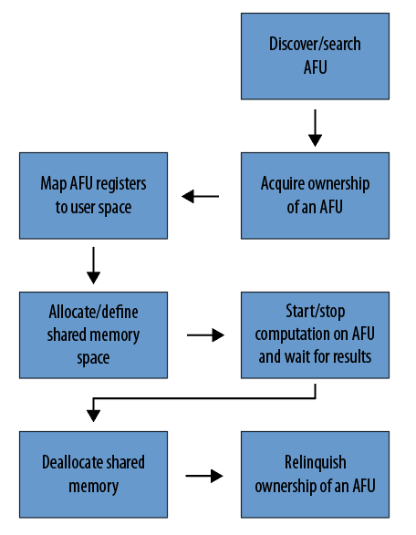

OPAE C API Programming Guide¶
Overview¶
The OPAE C library (libopae-c) is a lightweight user-space library that provides abstractions for FPGA resources in a compute environment. The OPAE C library builds on the driver stack that supports the FPGA device, abstracting hardware- and OS-specific details. It provides access to the underlying FPGA resources as a set of features available to software programs running on the host. These features include the acceleration logic preconfigured on the FPGA and functions to manage and reconfigure the FPGA. The library enables your applications to transparently and seamlessly benefit from FPGA-based acceleration.

By providing a unified C API, the library supports different FPGA integration and deployment models, ranging from single-node systems with one or a few FPGA devices to large-scale FPGA deployments in a data center. At one end of the spectrum, the API supports a simple application using a PCIe link to reconfigure the FPGA with different accelerator functions. At the other end of the spectrum, resource management and orchestration services in a data center can use this API to discover and select FPGA resources and then allocate them for use by acceleration workloads.
OPAE Role¶
The OPAE provides a common base layer for a wide range of applications without sacrificing performance or efficiency. The abstraction layer limits the details of the FPGA hardware that software applications must handle.
The OPAE provides consistent interfaces to crucial components of the platform. The OPAE does not constrain frameworks and applications by making optimizations with limited applicability. When the OPAE does provide convenience functions or optimizations, they are optional.
For example, the OPAE provides an interface to allocate physically contiguous buffers in system memory that user-space software and an accelerator can share. This interface enables the most basic feature set of allocating and sharing a large page of memory in one API call. However, it does not provide a malloc()-like interface backed by a memory pool or slab allocator. Higher layers of the software stack can make such domain-specific optimizations.
Intel Accelerator Stack Hardware Terminology¶
The following terms define the hardware and hardware processes involved in creating an accelerator function.
FPGA: Field Programmable Gate Array is a discrete or integrated device connecting to a host CPU via PCIe or other type of interconnects.
Accelerator Function Unit (AFU): The AFU is the supplied implementation of an accelerator, typically in HDL. AFUs implement a function such as compression, encryption, or mathematical operations. The Quartus Prime Pro software synthesizes the RTL logic into a bitstream.
Accelerator Function (AF): The AF is the compiled binary for an AFU. An AF is a raw binary file (.rbf) bitstream. A tool (fpgaconf) reconfigures the FPGA using an AF bitstream.
Reconfiguration: The process of reprogramming the FPGA with a different AF.
OPAE Software Concepts Reflected in the C API¶
The following OPAE data structures and functions integrate AFUs into the OPAE environment. The OPAE C API models these data structures and functions. For more information on the object models refer to the Object model section.
Accelerator: An accelerator is an allocable accelerator function implemented in an FPGA. An accelerator tracks the ownership of an AFU (or part of it) for a process that uses it. Multiple processes can share an accelerator.
Device: The OPAE enumerates and models two device types: the FPGA and the AFU.
Events: Events are asynchronous notifications. The FPGA driver triggers particular events to indicate error conditions. Accelerator logic can also define its own events. User applications can choose to be notified when particular events occur and respond appropriately.
Shared memory buffers: Software allocates shared memory buffers in user process memory on the host. Shared memory buffers facilitate data transfers between the user process and the accelerator that it owns.
OPAE Library¶
Linking with this library is straightforward.
Code using the OPAE library should include the header file fpga.h. Taking the GCC
compiler on Linux as an example, here is the simplest compile and link command:
gcc myprog.c -I</path/to/fpga.h> -L</path/to/libopae-c.so> -lopae-c -luuid -ljson-c -lpthread
.. note::
The OPAE library uses the third-party `libuuid` and `libjson-c` libraries that are not distributed with
the OPAE library. Make sure to install these libraries.
Sample Code¶
The library source includes two code samples. Use these samples to learn how to call functions in the library. Build and run these samples to determine if your installation and environment are set up properly.
Refer to the Running the Hello FPGA Example chapter in the Intel® Acceleration Stack Quick Start Guide for for Intel Programmable Acceleration Card with Intel Arria® 10 GX FPGA for more information about using the sample code.
High-Level Directory Structure¶
Building and installing the OPAE library results in the following directory structure on the Linux OS. Windows and MacOS have similar directories and files.
|Directory & Files |Contents | |——————|———| |include/opae |Directory containing all header files| |include/opae/fpga.h |Top-level header for user code to include| |include/opae/access.h |Header file for accelerator acquire/release, MMIO, memory management, event handling, and so on | |include/opae/bitstream.h |Header file for bitstream manipulation functions | |include/opae/common.h |Header file for error reporting functions | |include/opae/enum.h |Header file for AFU enumeration functions | |include/opae/manage.h |Header file for FPGA management functions | |include/opae/types.h |Various type definitions | |lib |Directory containing shared library files | |lib/libopae-c.so |The shared dynamic library for linking with the user application | |doc |Directory containing API documentation | |doc/html |Directory for documentation of HTML format |doc/latex |Directory for documentation of LaTex format |doc/man |Directory for documentation of Unix man page format
Basic Application Flow¶
The figure below shows the basic application flow from the viewpoint of a user-process.

API Components¶
The API object model abstracts the physical FPGA device and available functions. It is a generalized model and extends to describe any FPGA type.
Object Models¶
fpga_objtype: An enum type that represents the type of an FPGA resource, eitherFPGA_DEVICEorFPGA_ACCELERATOR. AnFPGA_DEVICEobject corresponds to a physical FPGA device. OnlyFPGA_DEVICEobjects can invoke management functions. TheFPGA_ACCELERATORrepresents an instance of an AFU.fpga_token: An opaque type that represents a resource known to, but not necessarily owned by, the calling process. The calling process must own a resource before it can invoke functions of the resource.fpga_handle: An opaque type that represents a resource owned by the calling process. The API functionsfpgaOpen()andfpgaClose()acquire and release ownership of a resource that anfpga_handlerepresents. (Refer to the Functions section for more information.)fpga_properties: An opaque type for a properties object. Your applications use these properties to query and search for appropriate resources. The FPGA Resource Properties section documents properties visible to your applications.fpga_event_handle: An opaque handle the FPGA driver uses to notify your application about an event.fpga_event_type: An enum type that represents the types of events. The following are valid values:FPGA_EVENT_INTERRUPT,FPGA_EVENT_ERROR, andFPGA_EVENT_POWER_THERMAL. (The Intel Programmable Acceleration Card (PAC) with Intel Arria 10 GX FPGA does not handle thermal and power events.)fpga_result: An enum type to represent the result of an API function. If the function returns successfully the result isFPGA_OK. Otherwise, the result is the appropriate error codes. FunctionfpgaErrStr()translates an error code into human-readable strings.
Functions¶
The table below groups important API calls by their functionality. For more information about each of the functions, refer to the OPAE C API reference manual.
|Functionality |API Call |FPGA |Accelerator|Description |
|:——–|:———-|:—–:|:—–:|:———————–|
|Enumeration | fpgaEnumerate() |Yes| Yes| Query FPGA resources that match certain properties |
|Enumeration: Properties | fpga[Get, Update, Clear, Clone, Destroy Properties]() |Yes| Yes| Manage fpga_properties life cycle |
| | fpgaPropertiesGet[Prop]() | Yes| Yes|Get the specified property Prop, from the FPGA Resource Properties table |
| | fpgaPropertiesSet[Prop]() | Yes| Yes|Set the specified property Prop, from the FPGA Resource Properties table |
|Access: Ownership | fpga[Open, Close]() | Yes| Yes|Acquire/release ownership |
|Access: Reset | fpgaReset() |Yes| Yes| Reset an accelerator |
|Access: Event handling | fpga[Register, Unregister]Event() |Yes| Yes| Register/unregister an event to be notified about |
| | fpga[Create, Destroy]EventHandle()|Yes| Yes| Manage fpga_event_handle life cycle |
|Access: MMIO | fpgaMapMMIO(), fpgaUnMapMMIO() |Yes| Yes| Map/unmap MMIO space |
| | fpgaGetMMIOInfo() |Yes| Yes| Get information about the specified MMIO space |
| | fpgaReadMMIO[32, 64]() | Yes| Yes|Read a 32-bit or 64-bit value from MMIO space |
| | fpgaWriteMMIO[32, 64]() |Yes| Yes| Write a 32-bit or 64-bit value to MMIO space |
|Memory management: Shared memory | fpga[Prepare, Release]Buffer() |Yes| Yes| Manage memory buffer shared between the calling process and an accelerator |
| | fpgaGetIOAddress() | Yes| Yes|Return the device I/O address of a shared memory buffer |
|Management: Reconfiguration | fpgaReconfigureSlot() | Yes | No | Replace an existing AFU with a new one |
|Error report | fpgaErrStr() | Yes| Yes|Map an error code to a human readable string |
.. note::
The UMsg APIs are not supported for the Intel(R) PAC cards. They will be deprecated in a future release.
FPGA Resource Properties¶
Applications query resource properties by specifying the property name for Prop in the
fpgaPropertiesGet[Prop]() and fpgaPropertiesSet[Prop]() functions. The FPGA and Accelerator
columns state whether or not the Property is available for the FPGA or Accelerator objects.
|Property |FPGA |Accelerator |Description |
|:———|:—–:|:—-:|:—–|
|Parent |No |Yes |fpga_token of the parent object |
|ObjectType |Yes |Yes |The type of the resource: either FPGA_DEVICE or FPGA_ACCELERATOR |
|Bus |Yes |Yes |The bus number |
|Device |Yes |Yes |The PCI device number |
|Function |Yes |Yes |The PCI function number |
|SocketId |Yes |Yes |The socket ID |
|DeviceId |Yes |Yes |The device ID |
|NumSlots |Yes |No |Number of AFU slots available on an FPGA_DEVICE resource |
|BBSID |Yes |No |The FPGA Interface Manager (FIM) ID of an FPGA_DEVICE resource |
|BBSVersion |Yes |No |The FIM version of an FPGA_DEVICE resource |
|VendorId |Yes |No |The vendor ID of an FPGA_DEVICE resource |
|GUID |Yes |Yes |The GUID of an FPGA_DEVICE or FPGA_ACCELERATOR resource |
|NumMMIO |No |Yes |The number of MMIO space of an FPGA_ACCELERATOR resource |
|NumInterrupts |No |Yes |The number of interrupts of an FPGA_ACCELERATOR resource |
|AcceleratorState |No |Yes |The state of an FPGA_ACCELERATOR resource: either FPGA_ACCELERATOR_ASSIGNED or FPGA_ACCELERATOR_UNASSIGNED|
OPAE C API Return Codes¶
The OPAE C library returns a code for every exported public API function. FPGA_OK indicates successful completion
of the requested operation. Any return code other than FPGA_OK indicates an error or unexpected
behavior. When using the OPAE C API, always check the API return codes.
|Error Code|Description|
|———-|———–|
|FPGA_OK|Operation completed successfully|
|FPGA_INVALID_PARAM|Invalid parameter supplied|
|FPGA_BUSY|Resource is busy|
|FPGA_EXCEPTION|An exception occurred|
|FPGA_NOT_FOUND|A required resource was not found|
|FPGA_NO_MEMORY|Not enough memory to complete operation|
|FPGA_NOT_SUPPORTED|Requested operation is not supported|
|FPGA_NO_DRIVER|Driver is not loaded|
|FPGA_NO_DAEMON|FPGA Daemon (fpgad) is not running|
|FPGA_NO_ACCESS|Insufficient privileges or permissions|
|FPGA_RECONF_ERROR|Error while reconfiguring FPGA|
Usage Models¶
Query and Search for a Resource¶
The user-code first populates an fpga_properties object with the required properties.
Then, fpgaEnumerate() searches for matching resources. fpgaEnumerate() may return more
than one matching resource.
#include "fpga/fpga.h"
fpga_guid guid;
fpga_properties filter = NULL;
fpga_result res;
fpga_token tokens[MAX_NUM_TOKENS];
uint32_t num_matches = 0;
/* Start with an empty properties object */
res = fpgaGetProperties(NULL, &filter);
/* Populate the properties object with required values.
In this case, search for accelerators that matches
the specified GUID.
*/
uuid_parse(GUID, guid);
res = fpgaPropertiesSetObjectType(filter, FPGA_ACCELERATOR);
res = fpgaPropertiesSetGuid(filter, guid);
/* Query the number of matching resources */
res = fpgaEnumerate(&filter, 1, NULL, 1, &num_matches);
/* Return tokens for all matching resources */
res = fpgaEnumerate(&filter, 1, tokens, num_matches, &num_matches);
/* Destroy the properties object */
res = fpgaDestroyProperties(&filter);
/* More code */
......
/* Destroy tokens */
for (uint32_t i = 0; i < num_matches; ++i) {
res = fpgaDestroyToken(tokens[i]);
}
The fpgaEnumerate() function can take multiple fpga_propertiesobjects in an array. In such cases,
the function performs a logical OR of the properties object and returns resources that match any of
the multiple properties. The fpga_token objects that fpgaEnumerate() returns, do not signify
ownership. To acquire ownership of a resource represented by a token, pass the token to fpgaOpen().
Acquire and Release a Resource¶
Use fpgaOpen() and fpgaClose() to acquire and release ownership of a resource.
The calling process must own the resource before it can initiate MMIO, access share memory buffers,
and use functions offered by the resource.
#include "fpga/fpga.h"
fpga_handle handle;
fpga_result res;
/* Acquire ownership of a resource that
`fpgaEnumerate()` previously returned as a token */
res = fpgaOpen(token, &handle);
/* More code */
......
/* Release the ownership */
res = fpgaClose(handle);
MMIO¶
This code snippet shows how to map and unmap the register file of an accelerator into the calling process’s virtual memory space.
#include "fpga/fpga.h"
fpga_handle handle;
fpga_result res;
/* Index of the MMIO space. There might be multiple spaces on an accelerator */
uint32_t mmio_num = 0;
/* Mapped address */
uint64_t mmio_addr;
/* Map MMIO */
res = fpgaMapMMIO(handle, mmio_num, &mmio_addr);
/* Write to a 32-bit value to the mapped register file at a certain byte
offset.
CSR_CTL is the offset in the mapped space to where the value will be
written. It's defined elsewhere.
*/
res = fpgaWriteMMIO32(handle, mmio_num, CSR_CTL, value);
/* More code */
......
/* Unmap MMIO */
res = fpgaUnmapMMIO(handle, mmio_num);
.. Note::
Every AFU has its own register adress space and its own protocol to control operation through
the registers.